<!DOCTYPE html>
    <head>
        <meta charset="utf-8">
        <meta http-equiv="X-UA-Compatible" content="IE=edge">
        <title>卡琳自動化教學 - Robot Framework 結構</title>
        <meta name="description" content="想學自動化真的需要先學習程式語言嗎？ 也許有更多其他的選擇喔！！ 進來了解一下 Robot Framework 吧。 也許更適合你喔！！">
        <meta name="keywords" content="Robot Framework, Automation, Automation for beginner, 自動化學習初學者, 自動化簡單易懂, 自動化工具, 卡琳自動化">
        <meta name="viewport" content="width=device-width, initial-scale=1">
        <link rel="stylesheet" href="menu.css">
        <link rel="stylesheet" href="style.css">
        <link rel="icon" type="image/png" href="img/favicon.png">
        <!-- Global site tag (gtag.js) - Google Analytics -->
        <script async src="https://www.googletagmanager.com/gtag/js?id=UA-167416723-1"></script>
        <script>
            window.dataLayer = window.dataLayer || [];
            function gtag(){dataLayer.push(arguments);}
            gtag('js', new Date());
        
            gtag('config', 'UA-167416723-1');
        </script>
        <!-- Global site tag (gtag.js) - Google Analytics -->
            <!-- facebook link -->
            <!-- You can use open graph tags to customize link previews.
            Learn more: https://developers.facebook.com/docs/sharing/webmasters -->
            <meta property="og:url"           content="https://carleenlean.github.io/" />
            <meta property="og:type"          content="website" />
            <meta property="og:title"         content="卡琳自動化教學" />
            <meta property="og:description"   content="想學自動化真的需要先學習程式語言嗎？ 也許有更多其他的選擇喔！！ 進來了解一下 Robot Framework 吧。 也許更適合你喔！！" />
            <!-- <meta property="og:image"         content="https://www.your-domain.com/path/image.jpg" /> -->
            <!-- facebook link -->
    </head>
    <body>
        <!-- facebook link -->
        <div id="fb-root"></div>
        <script async defer crossorigin="anonymous" src="https://connect.facebook.net/zh_TW/sdk.js#xfbml=1&version=v7.0"></script>
        <!-- facebook link -->
        <h1>卡琳自動化教學 - Robot Framework 內容結構</h1>
        <!--Side bar menu-->
        <div id="colorbox">
            <div id="sidenav">
                <a href="index.html" id="introduction">RF 介紹</a>
                <a href="setup.html" id="setup">RF 設定</a>
                <a href="structure.html" id="structure">RF 內容結構</a>
                <!-- <a href="selenium.html" id="seleniumlibrary">Selenium<br>Library</a>
                <a href="builtin.html" id="builtin">BuiltIn</a>
                <a href="collections.html" id="collections">Collections</a>
                <a href="datetime.html" id="datetime">DateTime</a>
                <a href="dialog.html" id="dialog">Dialog</a>
                <a href="string.html" id="string">String</a>
                <a href="project.html" id="project">範例教學</a> -->
            </div>
        </div>
        <!--Main content-->
        <!-- web counter -->
        <div id="counter">
            <!-- hitwebcounter Code START -->
            <a href="https://www.hitwebcounter.com" target="_blank">
            
            </a>
        </div>
        <!-- web counter -->
        <br>
        <!-- facebook link -->
            <div id="fb">
            <div class="fb-like" data-href="https://carleenlean.github.io/" data-width="" data-layout="button_count" data-action="like" data-size="large" data-share="true"></div>
            </div>
        <!-- facebook link -->
        <div class="wrapper">
            <div class="main">
                <p>
                    Robot framework 腳本儲存檔案類型是 ".robot"。例如：test.robot。Robot framework 腳本內容以四個主要結構組成： Settings， Variables， Test Cases 和 Keywords。
                </p>
                <h3>*** Settings ***</h3>
                <ul>
                    <li>
                        Settings 這個結構區塊主要是導入目前這個檔案所需要用到的 Library 以及相關的外部連結資源。如果沒有連結相關的 Library 或是資源，執行這個檔案腳本時就會出現失敗的結果。
                    </li>
                        <ul>
                            <li><span class="point">Library</span>: 包含了我們所用到的 Robot Framework Library 或是自己/別人寫的 Library 都可以從這裡導入。例如：目前這個腳本裡面我們所需要用到的關鍵字是 “<em>Open Browser</em>”; Open Browser 是 SeleniumLibrary 裡面的關鍵字。
                            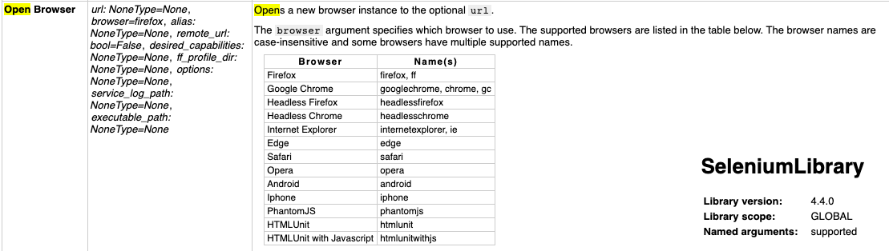    
                            所以我們就必須在這個腳本 Settings 區塊導入 “<em>Library    SeleniumLibrary</em>”。確實導入在腳本當中，我們跑腳本時才不會出現錯誤。
                            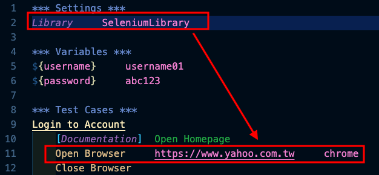
                            如果沒有正確導入，就會出現以下錯誤 “找不到關鍵字” (No keyword with name)
                            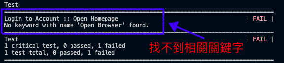
                            正確導入就 PASS 囉！！
                            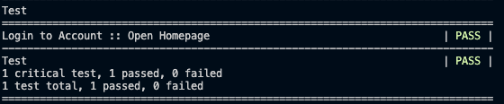
                            </li>
                            <li><span class="point">Resource</span>：讓我們主要可以連結外部資源檔案。為了讓我的檔案內容可以更乾淨利落很多時候我會把自訂關鍵字（稍後會寫到）寫在另一個檔案然後用 Resources 連結外部的關鍵字檔案。</li>
                            
                            <li><span class="point">Suite Setup</span>：這裡定義的是這一整組的測試用例 (test suite) 開始之前先執行什麼指令。例如：開始執行這一整組用例（好比說我有 6個測試用例）前，先啟動並登入服務器。那這個指令就會在跑第一個用例之前先啟動服務器，之後就再也不會執行這個指令。</li>
                            <li><span class="point">Suite Teardown</span>：這裡定義的是這一整組的測試用例 (test suite) 結束之後執行什麼指令。例如：這一整組用例（好比說我有 6個測試用例）跑完之後，登出並關閉服務器。那這個指令就會在最後一個（第6個）測試用例跑完之後登出並關閉服務器。</li>
                            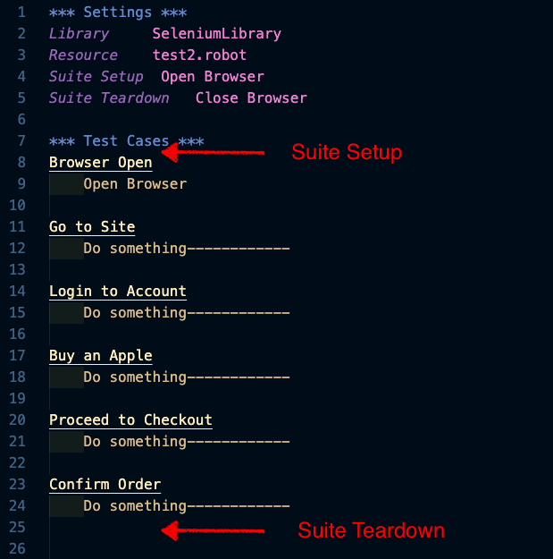
                            <li><span class="point">Test Setup</span>：這裡定義每個測試用例 (test case)開始前先做什麼事情。例如：執行每個測試用例前，先打開瀏覽器。</li>
                            <li><span class="point">Test Teardown</span>：這裡定義每個測試用例 (test case) 結束後要做什麼事情。例如：執行完每個測試用例之後，關閉瀏覽器。</li>
                            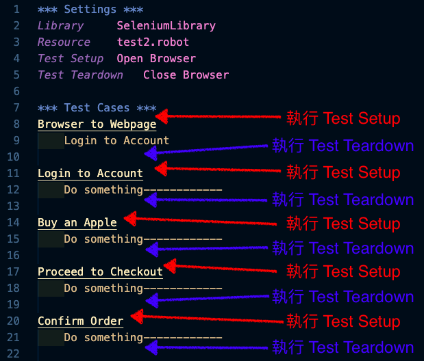
                            <li><span class="point">Test Template</span>: 這裡是定義測試範本。例如：網站針對使用者會員名字建立了規格。可能包含了不能空白，不能有特殊符號，不能有數字等等。。。這個時候我們就可以設置一個模板建立幾組會產生幾組無效的註冊結果看是否有問題。</li>
                            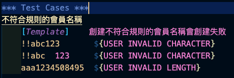
                        </ul>
                </ul>
                <h3>*** Variables ***</h3>
                <ul>
                    <li>Variables: 這個結構區塊可以讓我們填入變數。什麼是變數呢？你可以把它想像成一個儲存箱。你可以儲存任何模式的字串在這個儲存箱裡面。然後你可以在任何地方存取這個儲存箱裡面的資料。<br>
                    例如：我在 Variables 區塊定義了一個變數 <em>${username}</em> 然後我在這個變數儲存一個字串 <em>user01</em>。</li>
                    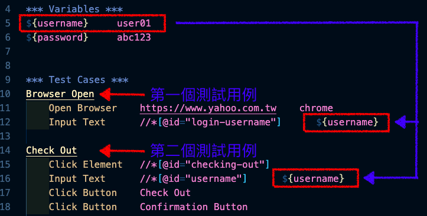
                    你可以看到在範例圖示的第 11 排：
                    <p>
                        <ul class="script">
                            <li>Input Text&nbsp;&nbsp;&nbsp;&nbsp;//*[@id="login-username"]&nbsp;&nbsp;&nbsp;&nbsp;${username}&nbsp;&nbsp;&nbsp;&nbsp;&nbsp;&nbsp;<span class="explain">&#8677;解釋: 輸入文字（<em>Input Text</em>）並且在定義網頁的位置（<em>//*[@id="login-username"]</em>）輸入文字，這個文字就會是我們在 Variables 區塊定義的變數 ${username} 也就是 <em>user01</em>&#8676;</span></li><br>
                            <li>現在看不懂沒有關係，陸續會說明～</li>
                        </ul>
                    </p>
                </ul>
                <h3>*** Test Cases ***</h3>
                <ul>
                    <li>Test Cases: 這個結構區塊可以依據既有的關鍵字（Keywords）建立測試用例。</li>
                    <ul>
                        <li>Keywords 導入方式一： Standard library。先是在 Settings 結構區塊定義要導入的 Standard Library。然後即可使用導入 Library 裡面的關鍵字。 </li>
                        <li>Keywords 導入方式二： 在設定區塊導入 Resource File 設定外部檔案連結。先是在 Settings 結構區塊定義要導入的 Resource。然後即可在 Test Cases 區塊使用導入檔案的關鍵字。</li>
                        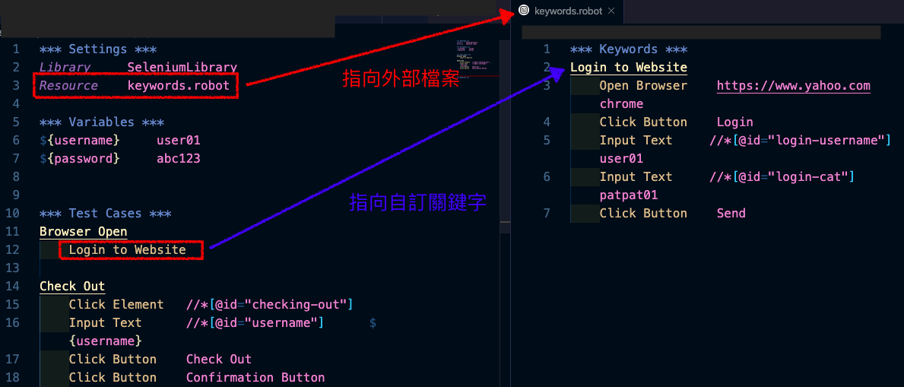
                        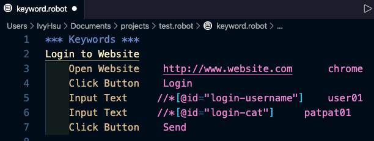
                        <li>Keywords 導入方式三： 直接在目前檔案的 Keywords 區塊建立Keywords 不用在 Settings 進行導入。 </li>
                        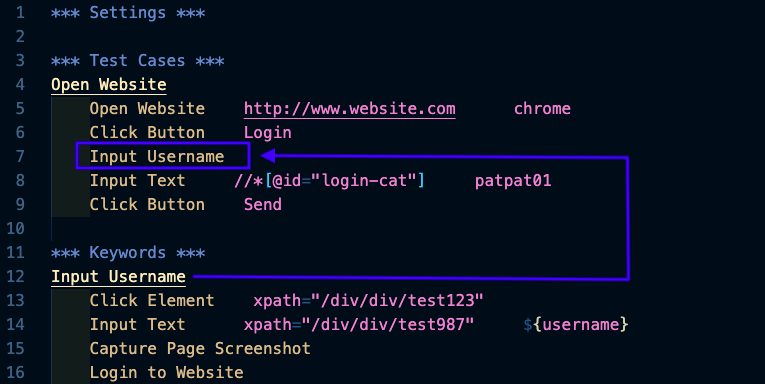
                    </ul>
                </ul>
                <h3>*** Keywords ***</h3>
                <ul>
                    <li>Keywords: 這個結構區塊定義自己</li>
                </ul>
            </div>
        </div>
        <a href="contact.html" id="contact">問問題</a>
        <footer>
            Copyright © 2020 卡琳自動化教學保留一切權利
        </footer>
        <script src="myScript.js"></script>
    </body>
</html>